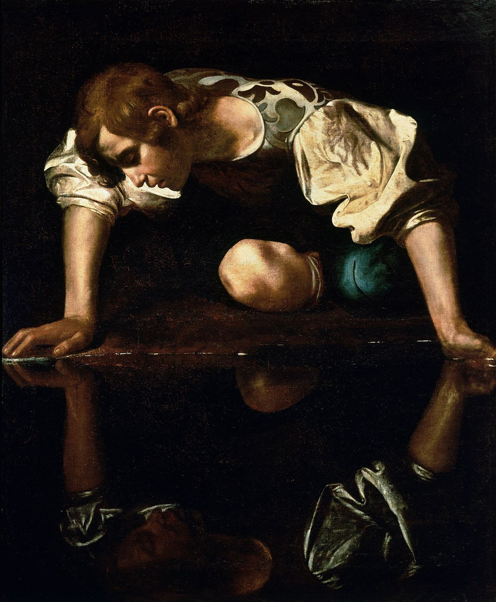
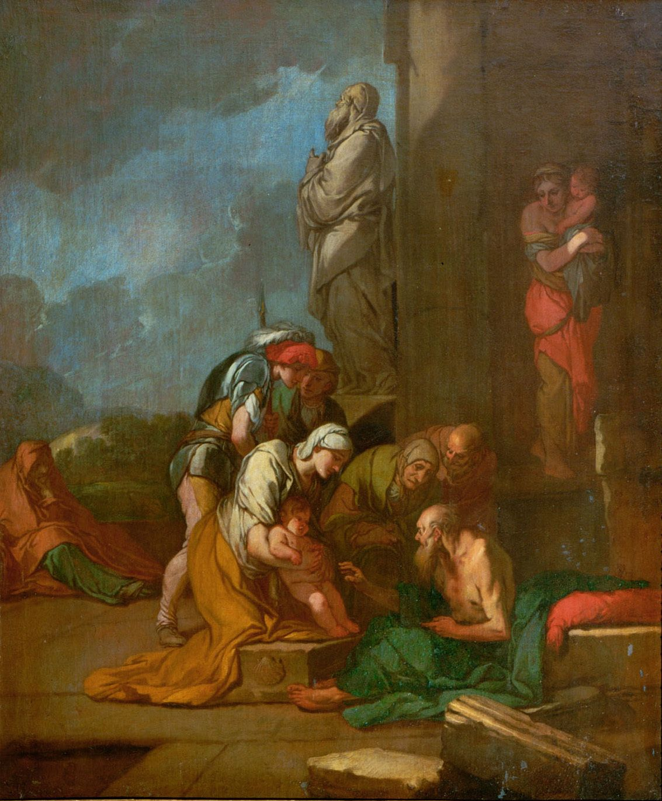
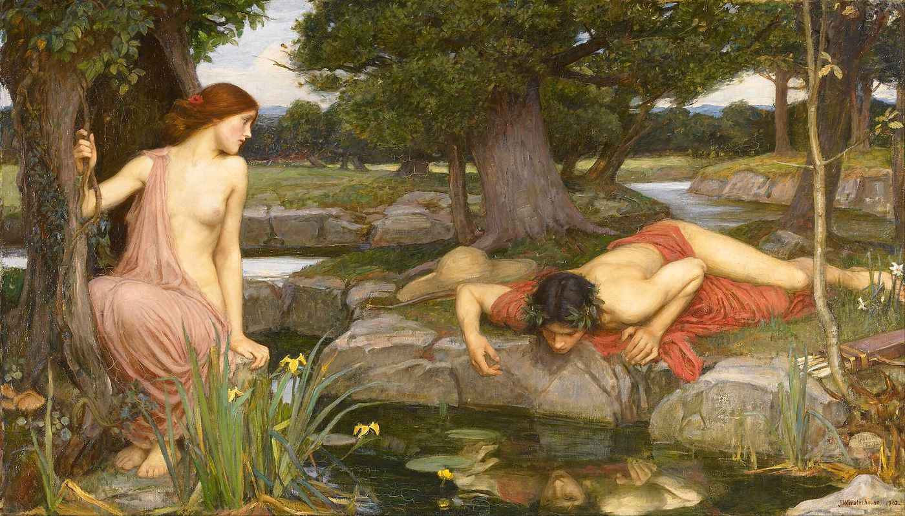

Cet essai a d’abord paru en turc. La version française est de ma main.

_edited.jpg){kind=link}
Iste ego sum: sensi, nec me mea fallit imago.
Ovide, Métamorphoses III, 463
His Majesty the Baby.
Sigmund Freud, « Zur Einführung des Narzißmus » (1914)
I
Au troisième livre des Métamorphoses, Ovide ouvre l’histoire de Narcisse, de façon surprenante, par une prophétie. La première à consulter Tirésias, aveuglé par Junon et doté en compensation par Jupiter du don de voir l’avenir, est la nymphe Liriope. Elle demande si son fils Narcisse vivra longtemps, et la réponse du devin renverse l’un des plus anciens commandements de la pensée occidentale : si se non noverit, « s’il ne se connaît pas ».1 Le gnōthi seauton, « connais-toi toi-même », inscrit à l’entrée du temple de Delphes, est l’appel fondateur de la philosophie. Le devin d’Ovide dit l’inverse : cet enfant ne vivra qu’aussi longtemps qu’il ne se connaîtra pas. Avant d’être, comme on le croit, une histoire d’amour de soi, le mythe est l’histoire d’une reconnaissance mortelle.


La seconde héroïne de l’histoire est Écho, et sa malédiction est elle aussi une malédiction de langage. Junon avait puni Écho, qui la retenait par de longs bavardages pour couvrir les rendez-vous de Jupiter avec les nymphes, en la privant de la faculté de dire ses propres paroles : Écho ne peut plus que renvoyer les derniers mots de ce qu’elle entend. Lorsque Narcisse, ayant perdu ses compagnons dans la forêt, lance « Quelqu’un est-il ici ? », la seule réponse qu’Écho puisse donner est le dernier mot de la question ; et quand il dit « Réunissons-nous », Écho répète le même mot avec joie, avec tout le double sens que porte le verbe latin coeamus.2 Narcisse la repousse. Écho se retire dans les grottes, son corps se consume, ses os se changent en pierre, et seule demeure sa voix.
Vient alors la scène célèbre. Narcisse, seize ans, se penchant sur une source limpide pour étancher sa soif, voit un visage dans l’eau et s’en éprend. Dans le récit d’Ovide, Narcisse ignore longtemps que ce visage est le sien ; il tente de l’étreindre, lui parle, voit ses lèvres remuer sans entendre sa voix. Puis, au tournant du mythe, il saisit la vérité : Iste ego sum: sensi, nec me mea fallit imago ; celui-là, c’est moi, je l’ai compris, mon image ne me trompe plus. Mais cette reconnaissance ne le sauve pas. Trois vers plus loin, il prononce l’un des paradoxes du désir les plus aigus de la littérature occidentale : quod cupio mecum est: inopem me copia fecit ; ce que je désire est avec moi, mon abondance m’a rendu pauvre.3 Narcisse se consume au bord de l’eau, et l’on trouve à sa place une fleur au cœur jaune et aux pétales blancs.
Une autre version du mythe, qui circulait dans le monde antique, jette sur cette scène de reconnaissance une lumière toute différente. Le géographe Pausanias, qui parcourut la Grèce au deuxième siècle et consigna ce qu’il voyait, décrivant la source de Narcisse en Béotie, dit ne pas trouver croyable qu’on puisse être assez sot pour ne pas distinguer son reflet de soi-même, et rapporte une version moins connue. Narcisse avait une sœur jumelle qui lui ressemblait trait pour trait ; ils portaient les mêmes vêtements et chassaient ensemble. Narcisse était amoureux de sa sœur. Lorsqu’elle mourut jeune, il se mit à aller à la source contempler son reflet ; il savait que c’était son propre visage qu’il y voyait, mais il se consolait en y voyant celui de sa sœur.4 Dans cette version, le reflet de Narcisse n’est pas une image de l’amour de soi, mais du deuil : on cherche dans son propre visage celui d’un être aimé disparu. Le récit d’Ovide lui-même ne s’achève pas avec la mort de Narcisse. Même descendu aux Enfers, Narcisse continue de contempler son reflet dans les eaux du Styx.5 Même la mort n’interrompt pas ce regard. La captivité de l’image survit à la vie elle-même. La psychanalyse connaît très bien le lien entre ces deux versions. Comme Freud le verra plus tard, la perte d’un objet aimé est parfois compensée par l’installation, dans le moi même du sujet, d’une image de cet objet.
Lues ensemble, les deux moitiés du mythe offrent une dramaturgie presque complète de ce que la psychanalyse conceptualisera au vingtième siècle. D’un côté, un sujet privé de sa propre image dans la mesure même où il la possède, incapable de s’en séparer dès qu’il la reconnaît ; de l’autre, un sujet sans parole propre, qui ne peut exister que comme l’écho de la parole d’un autre. Narcisse porte la pauvreté de l’image, Écho celle de la parole. L’un ne peut voir que son propre visage, l’autre ne peut dire que les mots d’autrui ; et tous deux se consument dans la même forêt sans jamais s’atteindre. Presque tous les récits actuels sur le « narcissique » sont racontés depuis la place d’Écho ; et je reviendrai, à la fin de cet essai, sur les raisons pour lesquelles cette place importe tant.
II
La figure mythologique devient un concept clinique à la fin du dix-neuvième siècle. En 1898, le sexologue anglais Havelock Ellis décrit la tendance à se prendre soi-même pour objet sexuel comme une tendance « à la manière de Narcisse » ; l’année suivante, le psychiatre allemand Paul Näcke, résumant l’observation d’Ellis, emploie le terme Narcismus comme nom d’une perversion sexuelle.6 Freud utilise d’abord le concept en 1910, dans une note ajoutée aux Trois essais sur la théorie sexuelle et dans son étude sur Léonard de Vinci, pour rendre compte d’une forme particulière de choix d’objet ; dans l’étude sur Schreber, en 1911, il situe le narcissisme comme un stade du développement entre l’auto-érotisme et l’amour d’objet.
L’étude sur Léonard est l’exemple le plus intéressant de ce premier usage. À partir du peu qu’il savait de l’enfance de Léonard de Vinci, et notamment de l’hypothèse selon laquelle le peintre aurait passé ses premières années loin de son père, seul avec sa mère, Freud interprète l’amour de Léonard pour les jeunes hommes comme un choix d’objet narcissique : Léonard aime les jeunes garçons comme sa mère l’aimait autrefois ; il aime en eux sa propre image, l’enfant qu’il a été.7 Le cadre de cette interprétation, qui traite l’homosexualité comme une « déviation », est aujourd’hui critiqué à juste titre. Mais il recèle une intuition qui nourrira toutes les théories ultérieures du narcissisme : on aime parfois un autre parce qu’on se voit en lui, tel qu’on est, qu’on a été ou qu’on voudrait être. Le narcissisme apparaît ici au sein d’une forme d’amour, comme le lieu même vers lequel l’amour se dirige.
La véritable transformation du concept a lieu en 1914, avec l’article de Freud Pour introduire le narcissisme. Freud cesse d’y traiter le narcissisme comme une perversion et le redéfinit comme le complément libidinal de l’égoïsme de la pulsion d’autoconservation, c’est-à-dire comme une dimension universelle du développement humain. L’image la plus célèbre de l’article est celle de l’amibe, par laquelle Freud décrit le rapport entre libido du moi et libido d’objet : comme les pseudopodes qu’une amibe projette hors de son corps et ramène à elle, la libido se porte vers les objets et, au besoin, revient au moi. Freud appelle narcissisme primaire cet investissement du moi propre à la toute première période du nourrisson ; la libido retirée des objets et ramenée au moi face aux déceptions de la vie constitue le narcissisme secondaire.8
Les lignes que Freud consacre au narcissisme primaire comptent parmi les plus ironiques et les plus justes jamais écrites sur la parentalité. L’attitude des parents envers leurs enfants, dit-il, est une surestimation qui n’est rien d’autre que la reviviscence de leur propre narcissisme, depuis longtemps abandonné : l’enfant ne doit pas être soumis à la maladie, à la mort, au renoncement au plaisir ; les lois de la nature et de la société doivent être suspendues en sa faveur. Freud résume ce tableau par trois mots qu’il a placés en anglais dans son texte allemand : His Majesty the Baby. Une autre contribution durable de l’article est l’idéal du moi. Pour Freud, ce que l’homme projette devant lui comme son idéal est le substitut du narcissisme perdu de son enfance ; l’adulte cherche désormais, dans un but placé devant lui, la perfection qu’il fut lui-même autrefois.
Le même article dit quelque chose de l’économie de l’amour. L’amoureux transfère sur l’aimé une partie de l’investissement libidinal de son moi ; il l’exalte en s’appauvrissant. C’est pourquoi l’amour non partagé blesse si profondément : ce qui est perdu n’est pas seulement une personne, mais la part de soi qu’on lui avait confiée. Freud distingue aussi deux types de choix d’objet : on aime soit sur le modèle des figures qui nous ont nourri et protégé, soit sa propre image, ce qu’on est, ce qu’on a été ou ce qu’on voudrait être, quelqu’un qui fut autrefois une partie de soi. Un passage dérangeant à lire aujourd’hui se trouve précisément à cet endroit : Freud évoque la fascination qu’exercent sur autrui certaines femmes apparemment suffisantes à elles-mêmes, les enfants, les chats et les grands fauves, et jusqu’aux grands criminels et humoristes de la littérature. Le préjugé sexiste du passage est évident et doit être critiqué. Mais il contient une observation qui, à mon sens, éclaire aussi le débat actuel : ceux qui ont dû renoncer à une part de leur narcissisme éprouvent à la fois admiration et envie envers ceux qui semblent l’avoir conservé intact. La fascination mêlée qu’exerce aujourd’hui la figure du « narcissique » porte les traces de cette vieille économie.
Amie proche de Freud, la philosophe et psychanalyste Lou Andreas-Salomé soutint dans un article de 1921 que le narcissisme n’est pas seulement un retournement vers soi, mais aussi une ouverture au monde. Pour elle, le narcissisme a une double direction : d’un côté l’amour que le moi se porte, de l’autre le reste du premier sentiment d’unité que le moi entretenait, dans la petite enfance, avec un monde qu’il ne distinguait pas encore de lui-même.9 La créativité de l’artiste, le sentiment de l’amoureux d’aimer le monde tout entier, l’impression d’illimité devant la nature portent les traces de cette première unité. L’idée d’Andreas-Salomé rappelle que le narcissisme peut être non seulement une pathologie, mais aussi une source de créativité et d’amour. Celui chez qui le narcissisme aurait entièrement disparu aurait peut-être perdu aussi la force de faire quelque chose de lui-même, de se donner à une œuvre, à un amour, à un monde.
III
Lacan porte cette pensée à un point bien plus radical. Selon son texte sur le stade du miroir, présenté pour la première fois au congrès international de psychanalyse de Marienbad en 1936 et réécrit à Zurich en 1949, le nourrisson de six à dix-huit mois, encore incapable de coordonner son corps et plongé dans une expérience morcelée, rencontre dans le miroir sa propre image unifiée et l’assume avec jubilation. Dans cette assomption, le moi se constitue au-dehors, dans une image. Selon les mots de Lacan, cette identification est l’armure d’une identité aliénante qui marquera tout le développement mental du sujet.10 Vu sous cet angle, le narcissisme n’est pas d’abord un trait de personnalité que certains auraient ; c’est la structure même du moi. Dès l’origine, le moi est fondé sur l’amour d’un reflet.
Un an plus tôt, en 1948, dans sa conférence de Bruxelles sur L’agressivité en psychanalyse, Lacan avait montré une autre face de cette structure. Identification narcissique et agressivité se répondent : le semblable qui se tient à la place que je voudrais occuper est celui que j’admire et que je hais à la fois. Lacan trouve les exemples les plus frappants de ce rapport dans le comportement des petits enfants et rappelle le phénomène que la psychologie du développement appelle transitivisme : l’enfant qui frappe son camarade dit avoir été frappé, l’enfant qui en voit un autre tomber se met à pleurer.11 Dans l’ordre imaginaire, la frontière entre le moi et l’autre est bien plus perméable qu’on ne le croit.
Ce constat porte un avertissement inattendu pour les débats actuels sur le « narcissique ». Traiter l’autre de narcissique, dans une relation, est souvent un geste accompli en plein cœur de l’ordre imaginaire : nous voyons en l’autre quelqu’un qui menace notre propre image, qui nous diminue, qui se tient là où nous voudrions être. Ce n’est pas un hasard si les ruptures où chacun accuse l’autre du même mot sont si fréquentes. Comme le dit Lacan dans son deuxième séminaire, le moi n’est pas le sujet, mais un objet ; et la rencontre de deux moi peut tourner à un jeu de reflets sans fin, comme deux miroirs placés face à face.12 C’est aussi la source de la critique sévère que Lacan adressa à une psychologie du moi américaine qui visait à renforcer le moi : renforcer le moi peut revenir à resserrer la captivité du sujet à sa propre image.
IV
Dans les années 1970, deux grandes théories du narcissisme s’affrontent dans la psychanalyse américaine, et leur débat façonne directement les systèmes diagnostiques psychiatriques d’aujourd’hui. Dans Le Soi (The Analysis of the Self, 1971), Heinz Kohut traite le narcissisme comme un besoin développemental. L’enfant a besoin d’un environnement qui le reflète, se réjouit de son existence et lui offre une figure qu’il puisse idéaliser ; Kohut appelle ces figures objets du soi. Lorsque ces besoins ne sont pas satisfaits, un soi fragile se forme, et la personne reste toute sa vie dépendante de l’approbation d’autrui. L’article de Kohut de 1972, où il élabore la notion de rage narcissique, montre comment cette fragilité peut se muer en une rage destructrice à la moindre blessure.13
L’apport clinique de Kohut est d’avoir décrit les transferts que ces personnes nouent en analyse. Il en distingue deux formes principales : dans le transfert en miroir, l’analysant attend de l’analyste qu’il le reflète, le confirme, se réjouisse de son existence ; dans le transfert idéalisant, il voit l’analyste comme une figure parfaite, puissante, admirable, et se tient ensemble en participant à sa grandeur.14 Pour Kohut, l’analyste ne doit pas les interpréter et les démanteler aussitôt, mais les porter un temps et, à travers les inévitables petites déceptions, aider l’analysant à construire peu à peu un soi propre. La tradition lacanienne regarde cette approche d’un œil critique : un analyste qui fonctionne comme un miroir risque d’attacher plus étroitement encore l’analysant à sa propre image. Mais les deux traditions se rejoignent sur un point : l’analyste qui travaille avec une fragilité narcissique ne doit ni démolir dans la hâte, ni consentir à un reflet sans fin.
Otto Kernberg, dans un livre paru en 1975, brosse un tableau tout différent. Pour Kernberg, le narcissisme pathologique est une défense érigée contre une envie et une rage intenses. La personne se construit une image grandiose d’elle-même qui n’a besoin de personne, utilise les autres pour nourrir cette image et les dévalorise dès qu’elle en a besoin. Si le narcissique de Kohut est un enfant blessé, celui de Kernberg est comme une forteresse qui ne laisse voir la blessure à personne.15 L’influence de ces deux théories se voit clairement dans l’entrée du trouble de la personnalité narcissique, pour la première fois en 1980, dans le manuel diagnostique psychiatrique américain, le DSM-III. Les propositions thérapeutiques de Kernberg se distinguent aussi nettement de celles de Kohut. Pour lui, l’analyste doit nommer et interpréter ouvertement, dans le transfert, ici et maintenant, l’image grandiose de l’analysant et l’envie qui la sous-tend ; porter longtemps l’image grandiose peut revenir à la renforcer. Dans les décennies suivantes, Kernberg et ses collègues ont fait de cette approche une méthode structurée et éprouvée par la recherche, la psychothérapie focalisée sur le transfert.16 Le débat entre Kohut et Kernberg n’était donc pas seulement théorique, mais clinique : faut-il d’abord à un enfant blessé un visage qui le reflète, ou faut-il d’abord ouvrir une porte dans une forteresse qui se protège ?
Les recherches actuelles suggèrent que ces deux tableaux sont moins deux théories qui s’excluent que deux faces d’une même structure. La vaste revue d’Aaron Pincus et Mark Lukowitsky, en 2010, distingue deux présentations fondamentales du narcissisme, grandiose et vulnérable, et souligne que le narcissisme pathologique observé par les cliniciens est bien plus répandu que ne le saisissent les critères diagnostiques stricts.17 Le narcissisme grandiose se présente comme un tableau assuré, ostentatoire et méprisant ; le narcissisme vulnérable comme la honte, l’hypersensibilité, l’incapacité à supporter la critique et le repli. Ce que vivent beaucoup de ceux qui se demandent aujourd’hui avec inquiétude « Et si j’étais narcissique, moi aussi ? », c’est précisément la douleur silencieuse de cette seconde présentation. Depuis que le livre de Christopher Lasch a désigné en 1979 toute une culture comme « culture du narcissisme », le débordement du concept hors de la clinique vers un diagnostic d’époque se nourrit de la même ambiguïté.18
Ce diagnostic d’époque s’est ravivé ces vingt dernières années. Dans The Narcissism Epidemic, paru en 2009, les psychologues Jean Twenge et W. Keith Campbell ont soutenu que les scores des étudiants américains aux échelles de narcissisme avaient augmenté au fil des décennies, et ont rattaché cette hausse aux réseaux sociaux, à la culture de la célébrité et au discours du « s’aimer soi-même ».19 Cette thèse a été vivement contestée par la suite ; certaines études fondées sur d’autres données n’ont pas trouvé d’augmentation nette. Mais le débat lui-même dit quelque chose : le narcissisme est devenu moins un trait de personnalité individuel qu’un mot qui porte l’inquiétude d’une époque à son propre sujet. Dans une culture où les écrans offrent un miroir permanent et où chaque publication attend une approbation, la source de Narcisse est partout ; et chacun redoute, dans une certaine mesure, d’être quelqu’un penché sur son propre reflet.
V
Le « narcissique » de la langue courante ne porte qu’une infime partie de cette longue histoire, et couvre un champ bien plus vaste : l’égoïsme ordinaire, la froideur affective, l’indifférence, le mensonge, la manipulation, l’emprise déclarée, et parfois simplement une rupture douloureuse. En français, l’expression « pervers narcissique », forgée par le psychanalyste Paul-Claude Racamier pour désigner une forme précise de mouvement psychique, a connu le même destin.20 Cette ampleur a une valeur et un coût, et il faut prendre l’une et l’autre au sérieux.


Sa valeur est la suivante : l’étiquette donne un nom à une expérience longtemps restée sans nom. Pour quelqu’un qui, au sein d’une relation, a commencé à douter de sa propre perception et n’a pas trouvé le mot pour dire ce qu’il vit, ce nom peut être un point d’appui. Dans la langue du mythe, l’étiquette rend une voix à Écho. Du point de vue psychanalytique, ce n’est pas rien ; car la véritable tragédie d’Écho n’est pas d’être repoussée par Narcisse, mais d’avoir été, avant cela, privée de sa propre parole. Pouvoir raconter son expérience avec ses propres mots est la première condition du rétablissement.
Son coût se loge dans la structure du récit que construit l’étiquette. Dans ce récit, l’autre devient un monstre et celui qui raconte seulement une victime ; et la question peut-être la plus importante de l’histoire se referme sans avoir été posée. Le texte d’Ovide la pose, de façon inattendue, du côté d’Écho : Écho s’est enflammée dès qu’elle a vu Narcisse pour la première fois dans la forêt, avant qu’il ne la repousse. Son amour précède le rejet ; et sa parole existe, dès l’origine, comme l’écho de celle de Narcisse. Lorsque la même forme de relation revient sans cesse dans une vie, la question n’est plus seulement celle de l’autre. Pourquoi Écho tombe-t-elle amoureuse de Narcisse, c’est-à-dire pourquoi quelqu’un se tourne-t-il vers des relations où il ne peut entendre sa propre voix que comme l’écho de celle d’un autre : la question mérite d’être posée. La poser ne revient pas à faire porter à la personne la responsabilité de sa souffrance ; cela revient à lui ouvrir une place dans sa propre histoire.
Il faut être clair ici. Quitter une relation marquée par la violence, la manipulation, l’emprise ou le contrôle est toujours légitime, et ne demande pas de poser un diagnostic sur l’autre. Il n’est pas nécessaire de diagnostiquer quelqu’un pour le quitter ; un diagnostic est, au mieux, une explication tardive qui aide à comprendre ce qui s’est joué dans la relation. Le trouble de la personnalité narcissique est un diagnostic qui demande une évaluation clinique approfondie et que les études en population générale retrouvent à des taux assez faibles ; le poser à distance, dans la douleur d’une relation, ne rend justice ni au diagnostic ni à la douleur.
VI
Freud pensait que les structures narcissiques étaient fermées au travail analytique. Dans ses Leçons d’introduction à la psychanalyse de 1916–1917, il affirme que celui qui a entièrement retiré sa libido des objets ne peut nouer de transfert avec l’analyste et reste donc inaccessible ; parmi ces « névroses narcissiques », il range les psychoses et la mélancolie.21 L’idée qui relie la mélancolie au narcissisme, Freud l’avait développée dans les mêmes années, dans l’article où il compare le deuil et la mélancolie. Dans le deuil, c’est le monde qui devient pauvre et vide ; dans la mélancolie, c’est le moi lui-même. Le mélancolique s’accuse, se dévalorise et se punit sans pitié ; mais Freud remarque que ces accusations, écoutées attentivement, visent en réalité un autre, perdu, aimé et en même temps haï. L’objet perdu n’a pas été lâché ; il a été pris dans le moi, et le moi s’est identifié à lui. Selon la formule inoubliable de Freud, l’ombre de l’objet est tombée sur le moi.22 Le Narcisse de Pausanias, le jeune homme qui cherche sa sœur morte dans le visage de l’eau, est comme l’équivalent mythique de cette phrase. Les générations suivantes ont largement dépassé ce pessimisme. La fragilité narcissique est aujourd’hui l’un des matériaux les plus fréquents de la clinique psychanalytique.
Dans le travail analytique, le narcissisme se manifeste souvent comme une incapacité à supporter de ne pas savoir. Une interprétation est entendue comme une critique blessante, un silence est vécu comme de l’indifférence, tout ce que dit l’analyste peut être perçu comme une attaque contre l’image du sujet. Ces réactions sont moins un obstacle que le travail lui-même ; car le rapport du sujet à sa propre image devient là, pour la première fois, quelque chose dont on peut parler en présence d’un autre. Du point de vue lacanien, la tâche de l’analyste n’est pas d’offrir à l’analysant un meilleur miroir. Elle est de permettre que la parole de l’analysant franchisse les limites que trace l’image, que la question « De quoi ai-je l’air ? » cède peu à peu la place à la question « Qu’est-ce que je veux ? ».
J’ai commencé cet essai par la prophétie de Tirésias : Narcisse vivra tant qu’il ne se connaîtra pas. Le mythe dit que se connaître est mortel ; la psychanalyse parie qu’une autre reconnaissance est possible. La reconnaissance qui a tué Narcisse s’est faite dans un miroir : il a vu son image, a compris qu’elle était lui, et n’a pu s’en séparer. Écho, elle, n’avait que les mots d’un autre. Ce que cherche le travail analytique, c’est une troisième possibilité entre ces deux pauvretés : une reconnaissance qui ne s’appuie pas sur un miroir, et une voix qui ne soit pas un écho. Le Narcisse de Pausanias nous rappelle par où passe cette possibilité : ce que l’on cherche dans le visage de l’eau, ce n’est souvent pas soi-même, mais un autre qu’on a perdu. Lorsque le deuil de cette perte peut se faire, l’eau redevient simplement de l’eau, et l’on peut poursuivre son chemin sans s’y pencher. Pouvoir reconnaître son propre désir dans sa propre parole, adressée à un autre.
Notes
- Ovide, Métamorphoses III, 348. Les numéros de vers suivent l’édition d’Oxford de R. J. Tarrant (2004). L’aveuglement de Tirésias et son don de prophétie sont racontés dans les vers qui précèdent. ↩︎
- Métamorphoses III, 359–392. Les glissements de sens que créent les réponses d’Écho dans le texte latin sont la principale raison pour laquelle on peut lire ce mythe comme un mythe sur le langage. ↩︎
- Métamorphoses III, 463 et 466. ↩︎
- Pausanias, Description de la Grèce, IX, 31, 7–8. Pausanias ajoute nettement son avis : qu’un homme en âge d’aimer ne sache pas distinguer une personne de son reflet lui paraît tout à fait déraisonnable. ↩︎
- Ovide, Métamorphoses III, 504–505 : tum quoque se, postquam est inferna sede receptus, / in Stygia spectabat aqua. Aussitôt après, on apprend que les naïades, ses sœurs, le pleurèrent et coupèrent leurs cheveux. ↩︎
- H. Ellis, « Auto-erotism: A psychological study », Alienist and Neurologist 19 (1898) ; P. Näcke, « Die sexuellen Perversitäten in der Irrenanstalt », Psychiatrische en Neurologische Bladen 3 (1899). Freud ouvre son article de 1914 en rappelant que le terme a été choisi par Näcke. ↩︎
- S. Freud, Un souvenir d’enfance de Léonard de Vinci (1910). Certaines hypothèses biographiques de l’étude, en particulier les interprétations fondées sur le souvenir du vautour, ont été vivement critiquées par la suite comme reposant sur une erreur de traduction ; l’oiseau du carnet de Léonard est un milan, non un vautour. ↩︎
- S. Freud, « Pour introduire le narcissisme » (1914). Les textes de Freud sont cités sous leurs titres français usuels, avec l’année de première publication. ↩︎
- L. Andreas-Salomé, « Narzißmus als Doppelrichtung », Imago 7 (1921). Connue comme amie proche de Nietzsche et de Rilke, Andreas-Salomé rejoignit le cercle de Freud en 1912 et exerça comme psychanalyste à Göttingen. ↩︎
- J. Lacan, « Le stade du miroir comme formateur de la fonction du Je » (1949), Écrits (1966), p. 93–100. ↩︎
- J. Lacan, « L’agressivité en psychanalyse » (1948), Écrits, p. 101–124. Lacan discute le transitivisme en s’appuyant sur les observations de Charlotte Bühler. ↩︎
- J. Lacan, Le Séminaire, Livre II : Le moi dans la théorie de Freud et dans la technique de la psychanalyse (1954–1955), Paris, Seuil, 1978. ↩︎
- H. Kohut, The Analysis of the Self (1971) ; « Thoughts on narcissism and narcissistic rage », The Psychoanalytic Study of the Child 27 (1972). ↩︎
- H. Kohut, The Analysis of the Self, New York, International Universities Press, 1971, chapitres 2 et 5. Kohut propose d’accepter ces transferts pendant un temps plutôt que de les dissoudre par l’interprétation, et de les transformer peu à peu à travers les petits échecs inévitables de l’analyste. ↩︎
- O. Kernberg, Borderline Conditions and Pathological Narcissism (1975) ; trad. fr. Les troubles limites de la personnalité, Privat, 1979. ↩︎
- J. F. Clarkin, F. E. Yeomans et O. F. Kernberg, Psychotherapy for Borderline Personality: Focusing on Object Relations, Washington, DC, American Psychiatric Publishing, 2006. La méthode, d’abord conçue pour l’organisation limite de la personnalité, a ensuite été adaptée à l’organisation narcissique. ↩︎
- A. L. Pincus et M. R. Lukowitsky, « Pathological narcissism and narcissistic personality disorder », Annual Review of Clinical Psychology 6 (2010), p. 421–446. ↩︎
- C. Lasch, The Culture of Narcissism (1979) ; trad. fr. La Culture du narcissisme, Robert Laffont, 1980. ↩︎
- J. M. Twenge et W. K. Campbell, The Narcissism Epidemic: Living in the Age of Entitlement, New York, Free Press, 2009. Le résultat a été discuté par des recherches ultérieures ; certaines études, menées sur d’autres données, n’ont pas trouvé d’augmentation marquée d’une génération à l’autre. ↩︎
- P.-C. Racamier, Les Perversions narcissiques, Paris, Payot, 1992 ; la notion apparaît dans ses travaux dès les années 1980. Racamier décrivait un mouvement psychique de défense, et non une catégorie de personnes à repérer de l’extérieur. ↩︎
- S. Freud, Leçons d’introduction à la psychanalyse (1916–1917), en particulier les leçons 26 et 27. ↩︎
- S. Freud, « Deuil et mélancolie » (1917). La phrase de Freud est : Der Schatten des Objekts fiel so auf das Ich. ↩︎
Bibliographie
- Andreas-Salomé, L. (1921). Narzißmus als Doppelrichtung. Imago, 7.
- Clarkin, J. F., Yeomans, F. E. et Kernberg, O. F. (2006). Psychotherapy for Borderline Personality: Focusing on Object Relations. American Psychiatric Publishing.
- Ellis, H. (1898). Auto-erotism: A psychological study. Alienist and Neurologist, 19.
- Freud, S. (1910). Un souvenir d’enfance de Léonard de Vinci. Gallimard.
- Freud, S. (1914). Pour introduire le narcissisme. Dans La Vie sexuelle. PUF.
- Freud, S. (1916–1917). Leçons d’introduction à la psychanalyse. PUF.
- Freud, S. (1917). Deuil et mélancolie. Dans Métapsychologie. Gallimard.
- Kernberg, O. (1975). Borderline Conditions and Pathological Narcissism. Jason Aronson.
- Kohut, H. (1971). The Analysis of the Self. International Universities Press. [Trad. fr. : Le Soi. PUF, 1974.]
- Kohut, H. (1972). Thoughts on narcissism and narcissistic rage. The Psychoanalytic Study of the Child, 27.
- Lacan, J. (1966). Le stade du miroir comme formateur de la fonction du Je ; L’agressivité en psychanalyse. Dans Écrits. Seuil.
- Lacan, J. (1978). Le Séminaire, Livre II (1954–1955). Seuil.
- Lasch, C. (1979). The Culture of Narcissism. W. W. Norton.
- Ovide. Métamorphoses, livre III. R. J. Tarrant (éd.), Clarendon Press, 2004.
- Pausanias. Description de la Grèce, livre IX.
- Pincus, A. L. et Lukowitsky, M. R. (2010). Pathological narcissism and narcissistic personality disorder. Annual Review of Clinical Psychology, 6, 421–446.
- Racamier, P.-C. (1992). Les Perversions narcissiques. Payot.
- Twenge, J. M. et Campbell, W. K. (2009). The Narcissism Epidemic: Living in the Age of Entitlement. Free Press.